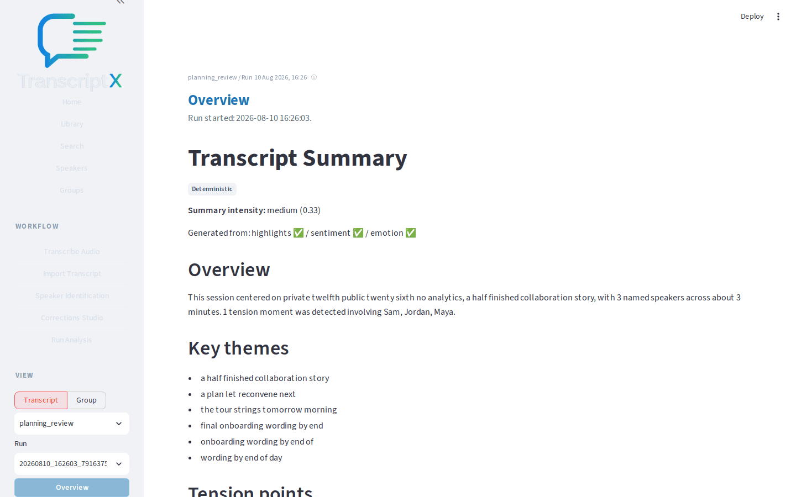
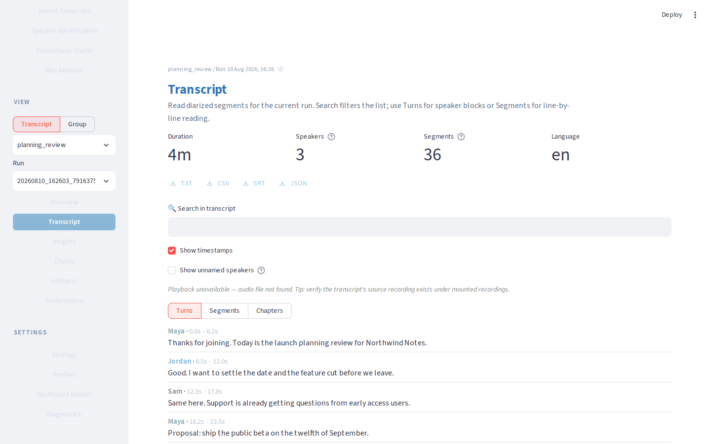
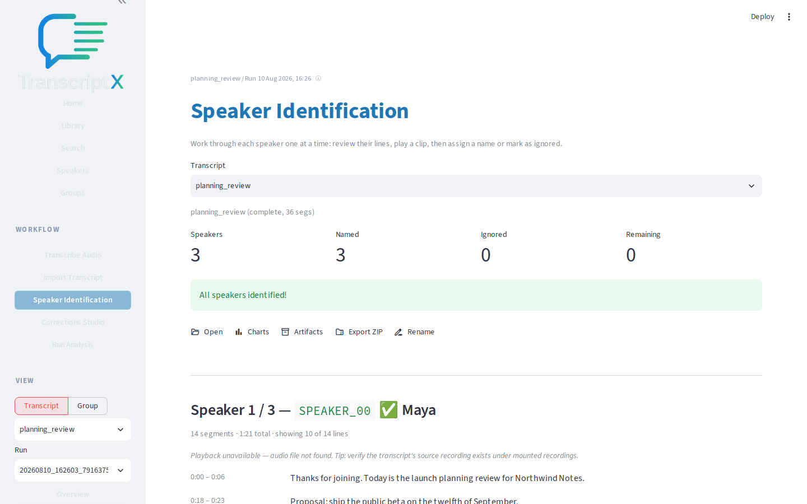
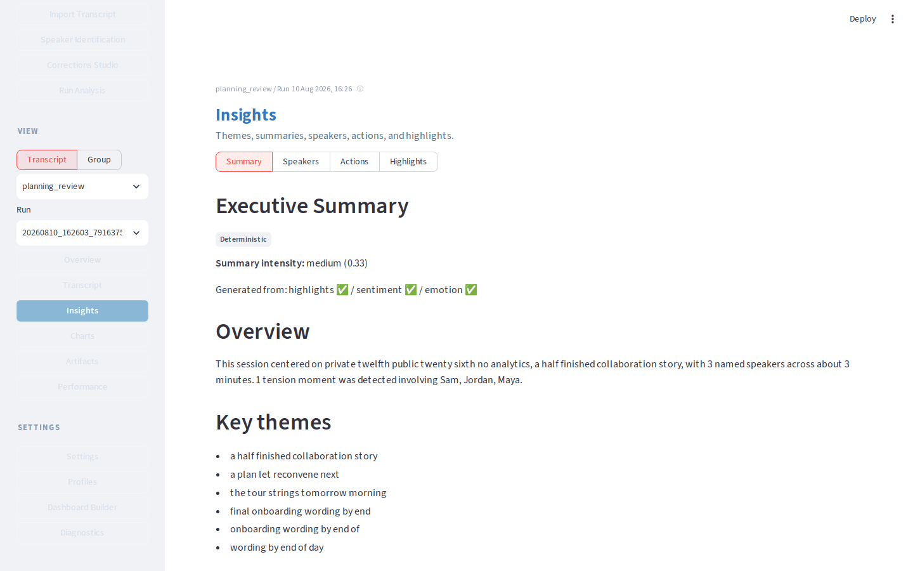

TranscriptX
Think with your transcripts — on your machine.
Import conversations you already have. See themes, speakers, and evidence in one place. Optional local AI stays on your computer. TranscriptX does not transcribe audio — bring files from WhisperX, Scriberr, noScribe, Otter, and similar tools.
The application
After a run you can read an Overview, open the transcript, name speakers, and scan Insights. Charts lives in the same View menu for visual module outputs.




What can I do with it?
- Understand themes across a conversation
- Compare speakers — who said what, and how they interact
- Investigate a question and jump back to the original lines
- Analyse several conversations together over time
- Correct the transcript while you read
- Export findings as HTML or a ZIP you keep
Explore the workflows for step-by-step jobs, or see how it compares to transcription tools, meeting assistants, and research software.
On your machine
Source files and analysis results stay on your computer. Optional AI uses Ollama locally and stays off until you turn it on. Nothing here is a hosted analysis service.
From a file to a useful Overview
- Open Import Transcript and upload a JSON file.
- Open Run Analysis, keep Balanced, and run it.
- Open Overview and note a couple of useful outputs.
-
If speakers still look like
SPEAKER_00, name them next.
Install
Docker is the simplest path. Copy .env.example to
.env and set HOST_RECORDINGS_DIR to a
folder outside the repository.
git clone https://github.com/glen-w/TranscriptX.git
cd TranscriptX
cp .env.example .env # set HOST_RECORDINGS_DIR
docker compose up transcriptx-webOpen http://localhost:8501. The first run builds the image.
Native install and troubleshooting: Installation · Bring transcript files · README